Miniconda的安装与环境的配置（Windows）#
须知#
由于作者的贫穷，买不起Mac，对于使用Linux的同学，我认为他们是大概率不需要教程的，所以这篇文章只针对于使用Windows的用户。对于使用其他系统的同学请自行查阅相关资料，完成环境的配置
安装教程可以参考https://docs.conda.io/projects/miniconda/en/latest/
科学上网有困难的同学，可以使用清华源下载安装包https://mirrors.tuna.tsinghua.edu.cn/anaconda/miniconda/
本次教程使用的Python版本为3.9.18，还需要用到一下包：
NumPy
Matplotlib
Pandas
scikit-learn
SymPy
SciPy
scikit-opt
Jupyter
Miniconda的安装#
安装包的下载#
最新版本的Windows版本的Miniconda不支持除了x86_64外的CPU架构
安装#
运行下载的exe文件即可开始安装，按照流程完成即可
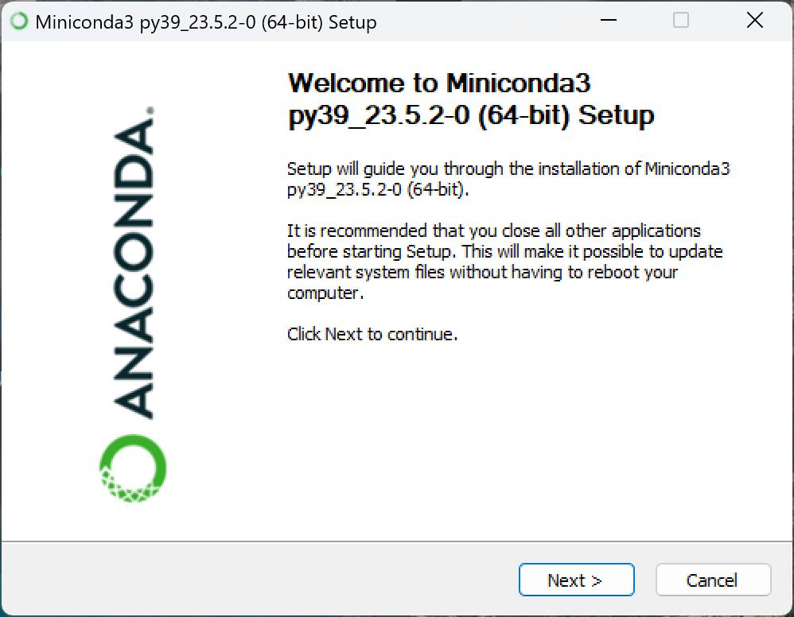
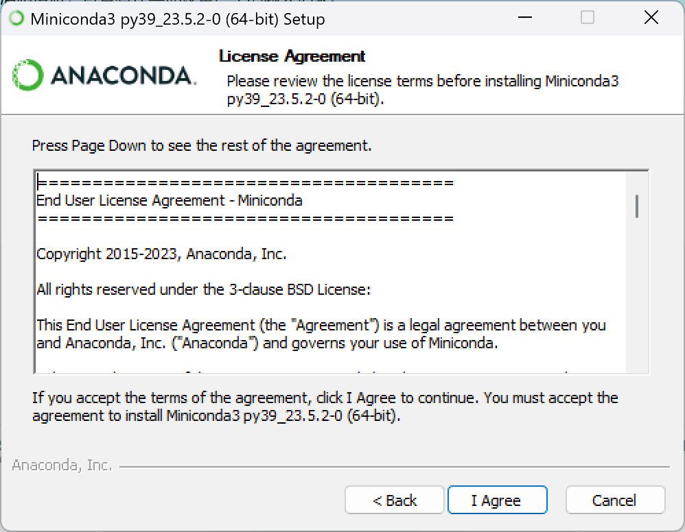
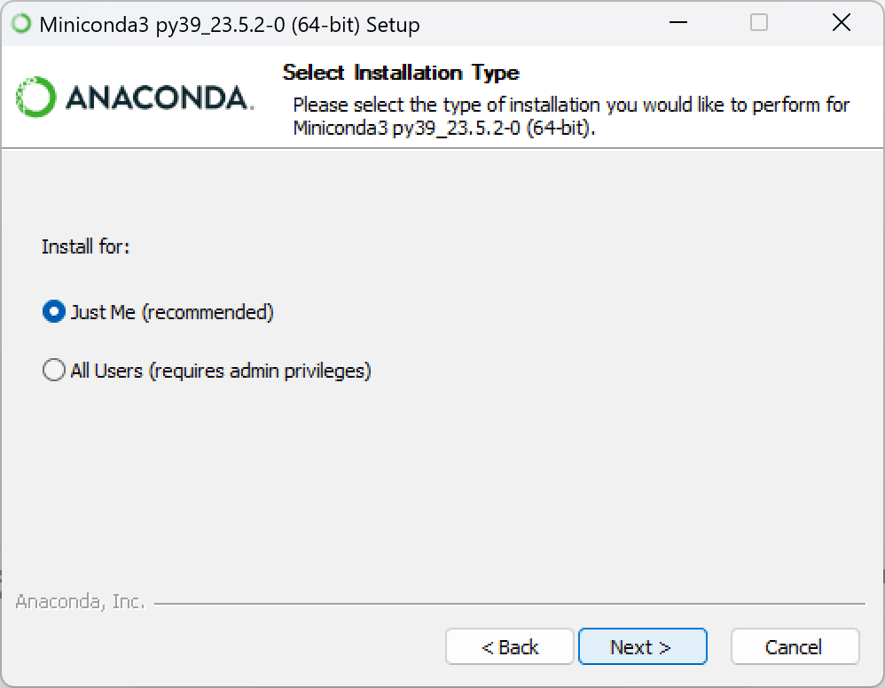
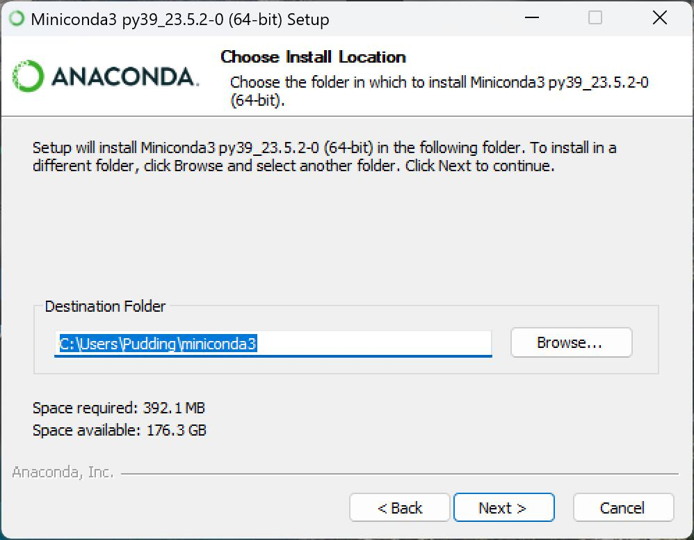
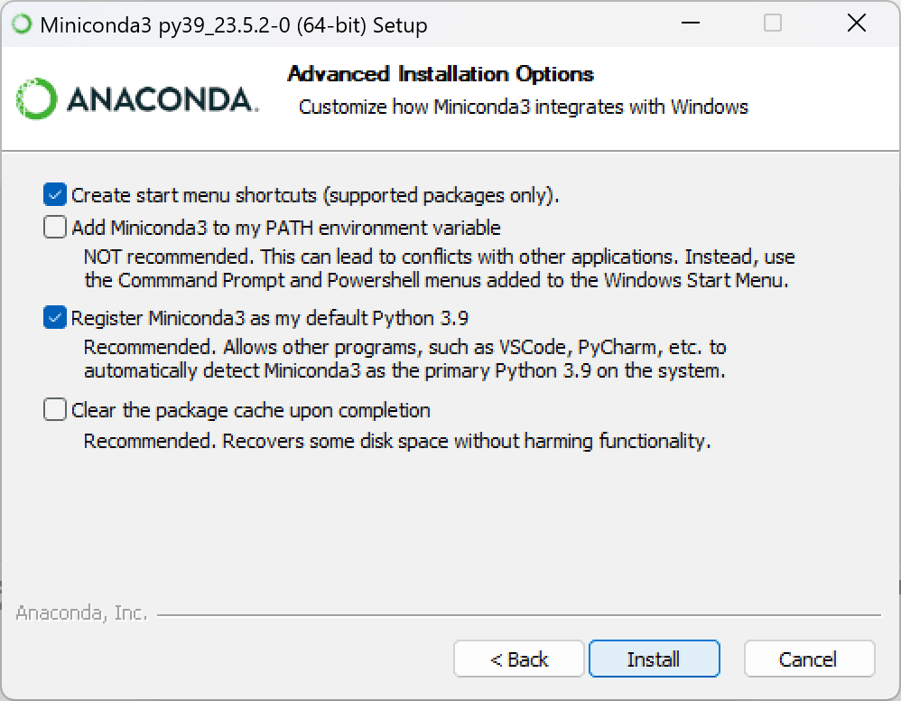
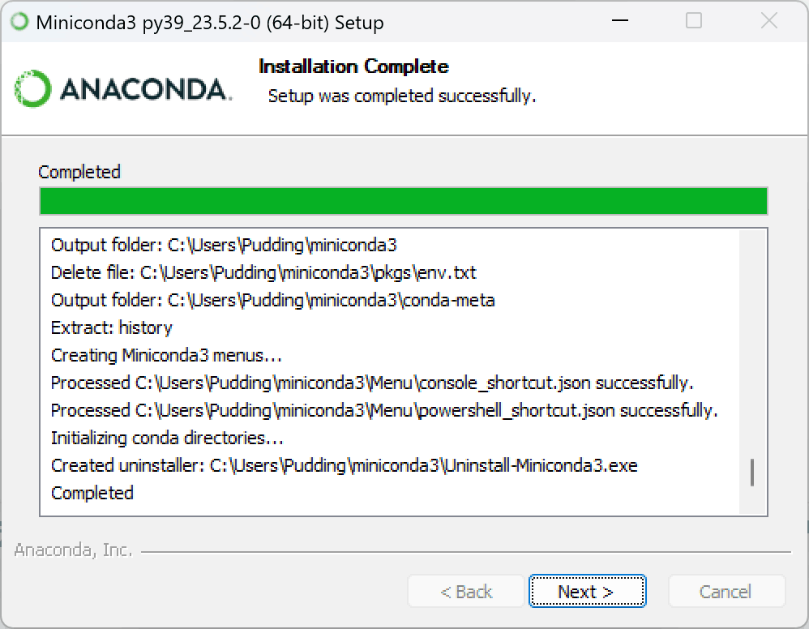
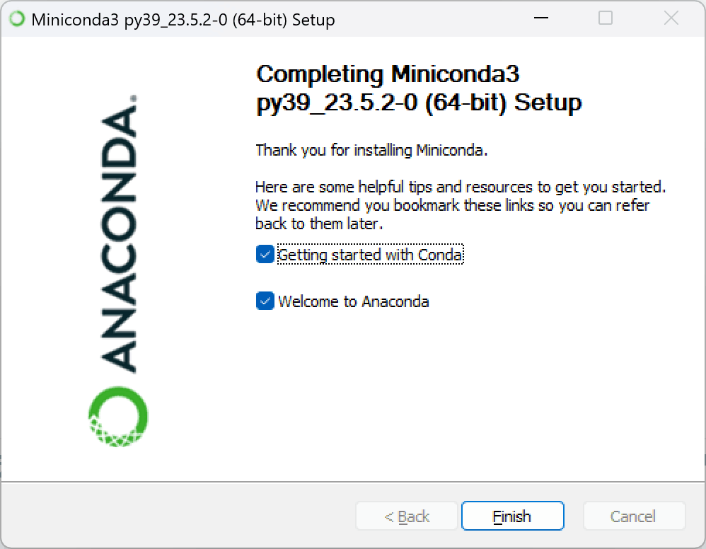
新建Conda环境#
修改为清华源#
可以参考清华源官方帮助文档
在“开始”菜单中，找到“Anaconda Prompt(miniconda3)”，并打开
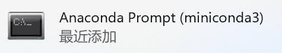
可以看到如下界面
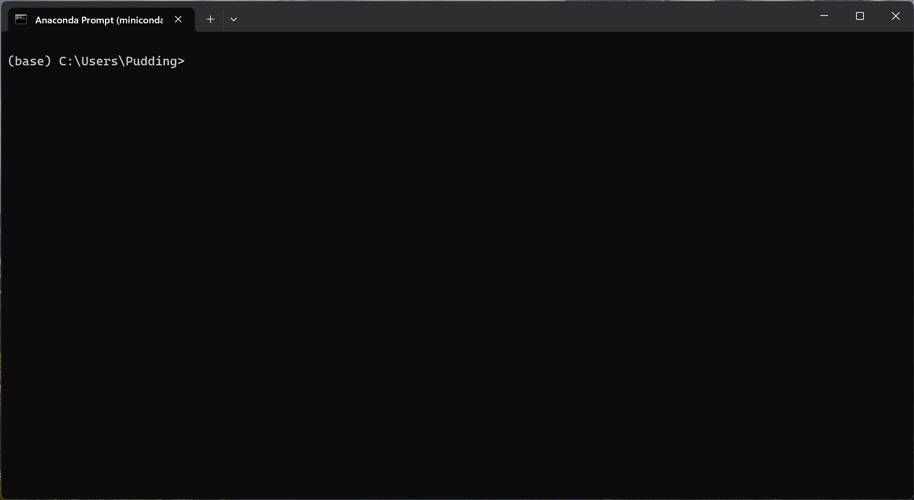
在命令行中输入
conda config --set show_channel_urls yes然后在”C:\Users\你的用户名”文件夹下，可以找到”.condarc”文件，使用记事本打开，将其中内容修改为：
channels: - defaults show_channel_urls: true default_channels: - https://mirrors.tuna.tsinghua.edu.cn/anaconda/pkgs/main - https://mirrors.tuna.tsinghua.edu.cn/anaconda/pkgs/r - https://mirrors.tuna.tsinghua.edu.cn/anaconda/pkgs/msys2 custom_channels: conda-forge: https://mirrors.tuna.tsinghua.edu.cn/anaconda/cloud msys2: https://mirrors.tuna.tsinghua.edu.cn/anaconda/cloud bioconda: https://mirrors.tuna.tsinghua.edu.cn/anaconda/cloud menpo: https://mirrors.tuna.tsinghua.edu.cn/anaconda/cloud pytorch: https://mirrors.tuna.tsinghua.edu.cn/anaconda/cloud pytorch-lts: https://mirrors.tuna.tsinghua.edu.cn/anaconda/cloud simpleitk: https://mirrors.tuna.tsinghua.edu.cn/anaconda/cloud deepmodeling: https://mirrors.tuna.tsinghua.edu.cn/anaconda/cloud/
运行
conda clean -i清除索引缓存，保证用的是镜像站提供的索引。
创建名为sxjm的新conda环境#
打开“Anaconda Prompt(miniconda3)”
在其中输入
conda create --name sxjm python=3.9 -y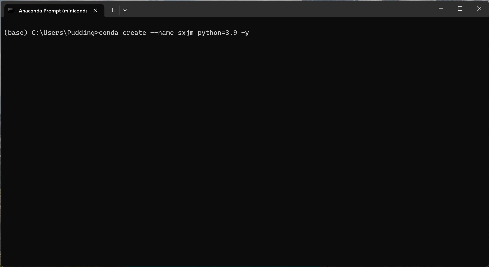
等待程序运行完成
输入
conda activate sxjm激活sxjm环境，前方括号中变为(sxjm)则激活成功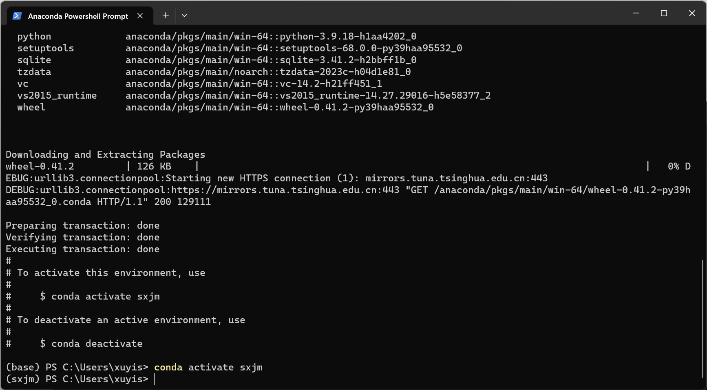
Python包的安装#
python安装包有使用
pip install和conda install命令两种方法，这里介绍使用使用pip install的方法
修改为清华源#
找到“Anaconda Prompt(miniconda3)”，并打开。激活sxjm环境。然后运行下述命令
python -m pip install --upgrade pip pip config set global.index-url https://pypi.tuna.tsinghua.edu.cn/simple
安装所需要的包#
找到“Anaconda Prompt(miniconda3)”，并打开。激活sxjm环境。然后运行下述命令
pip install numpy matplotlib pandas scikit-learn sympy scipy scikit-opt
Jupyter Notebook的使用#
Jupyter的安装#
找到“Anaconda Prompt(miniconda3)”，并打开。激活sxjm环境。然后运行下述命令
pip install jupyter
打开Jupyter Notebook#
找到“Anaconda Prompt(miniconda3)”，并打开。激活sxjm环境。然后运行下述命令
jupyter notebook
然后会自动打开浏览器，可以看到如下界面
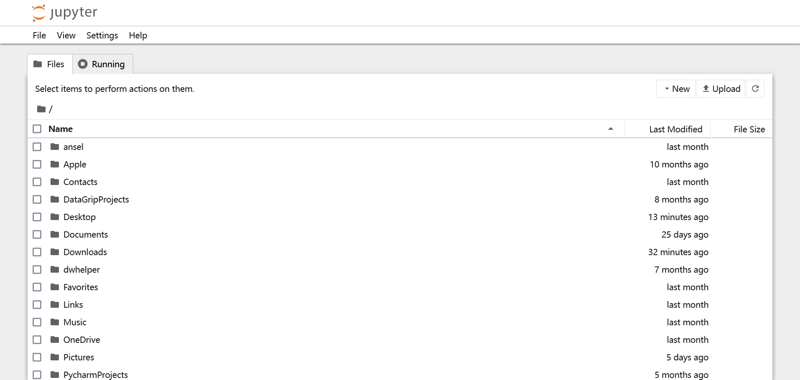
出现上述界面即可，10月1日的讲座中，需要用到Jupyter Notebook来展示教程资料
如果希望Jupyter Notebook的默认工作路径，可以自行上网搜寻相关资料